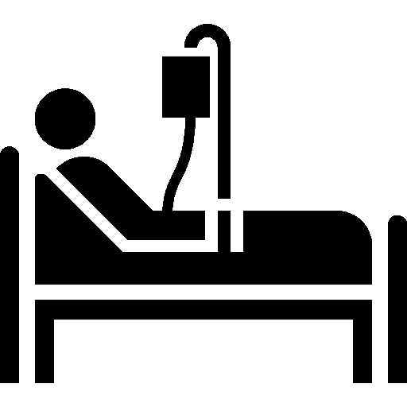
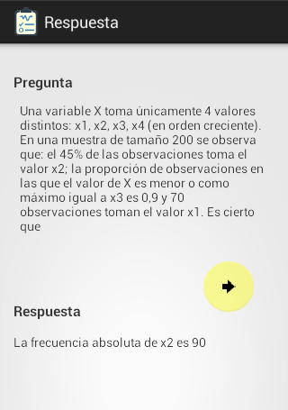
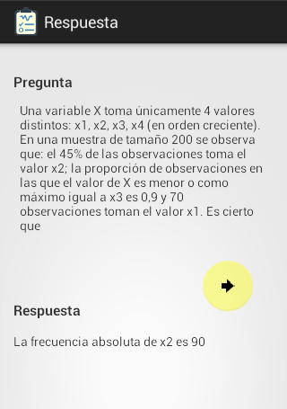
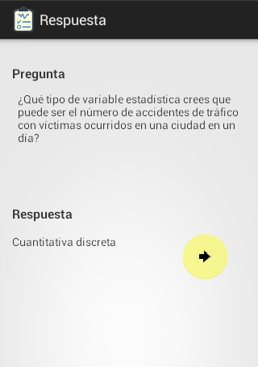
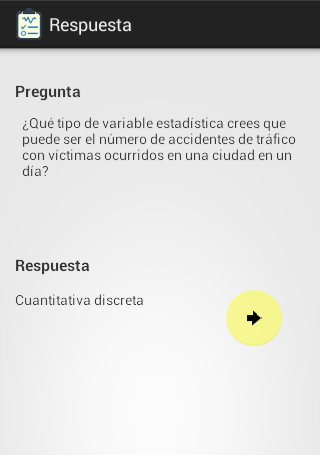

vQuiz
vQuiz
Descripción del Proyecto 

vQuiz es una app (Android) para generar cuestionarios con preguntas de selección múltiple, en su primera etapa sobre tópicos de la Salud. Es un Juego Educativo, ideal para estudiantes de medicina, enfermería, u otras carreras en el área de la salud.
Con más de 25.000 preguntas, que equivalen a cientos de exámenes, disponibles desde tu dispositivo móvil, en todo momento. Que te garantizarán horas y horas de preparación y entretenimiento. Al usar vQuiz no necesitarás sacar copias de viejos exámenes, con lo que ahorrarás dinero, y cuidaras el medio ambiente.
- vQuiz permite evaluarse sobre:
- Temas sobre salud
- Partes del cuerpo
- Enfermedades
- Tratamientos
- Diagnósticos
- Casos Clínicos
Estado del Proyecto
- 1ra Etapa Operativa la versión Beta
- Implementación de la aplicación móvil tipo trivia en Android, como una herramienta para complementar el estudio
- Permite generar cuestionarios de selección múltiple desde un Banco de 25.000 preguntas sobre el Área de la Salud
- Permite la autoevaluación
- Califica el cuestionario, muestra la respuesta correcta, el comentario y/o la justificación de la respuesta
- Genera gráficos del comportamiento del usuario por cada tópico
- Permite ahorrar tiempo y dinero, mientras es una App amigable con el medio ambiente
- 2da Etapa en lo que estamos trabajando
- Implementación de un Socket Server
- Permitir compartir los resultados de un tópico con otros usuarios
- Permitir comparar los resultados propios con el resto del mundo
- Permitir la aplicación de evaluaciones a distancia
- Permitir que un instructor observe en tiempo real el comportamiento de un grupo de alumnos
- Ampliar el Banco de Preguntas
- Publicar la App en Play Store, con un modelo de subscripción
- 3ra Etapa en estado de Planificación
- Implementar la App en IOS
- Trasformar la experiencia de usuario para que se asemeje más a un vídeo juego
¿Qué Requerimos?
Para continuar con el desarrollo del proyecto estamos en la búsqueda de financiación, para ello estamos permitiendo el uso pre-lanzamiento de la App.
¿Qué ofrecemos pre-lanzamiento?
Acceso a generar cuestionarios desde el Banco de Preguntas, con más de 25.000 preguntas distribuidas por diferentes tópicos; acceso a los resultados y gráficos de los cuestionarios resueltos; acceso a la respuesta correcta, y acceso al comentario, o a la justificación de la respuesta, durante 365 días por la colaboración.
Cantidad de Preguntas Agregadas (Enero, 2021)
|
|
||
 | Anatomía Humana | ||
| Histología | |||
 | Anatomía Patológica | ||
| Anestesiología | |||
| Vasos sanguíneos | |||
 | Ética Médica | ||
 | Bioestadística | ||
 | Bioquímica | ||
 | Corazón | ||
| Cirugía | |||
|  | Cuidados Criticos | ||
 | Cuidados Paliativos | ||
 | Demografía | ||
 | Dermatología | ||
 | Electrocardiografía | ||
| Embriología | |||
| Urgencias | |||
 | Glándulas | ||
| Enfermedades Infecciosas y Parasitarias | |||
 | Epidemiología | ||
| Farmacología | |||
| Fisiología | |||
| Fisiopatología | |||
 | Sistema Digestivo | ||
| Genética Médica | |||
| Genetica e Inmunología | |||
| Geriatría | |||
| Ginecología y Obstetrícia | |||
| Hematología | |||
| Osteología | |||
 | Inmunología | ||
 | Medicina Preventiva | ||
| Microbiología | |||
| Microbiología y Parasitología | |||
| Músculos | |||
 | Riñon | ||
| Neumofisiología | |||
| Vías respiratorias | |||
| Vías nerviosas | |||
| Nociones de Enfermería | |||
 | Nociones de Nutrición | ||
| Oftalmología | |||
| Oncología | |||
| Ortopedia | |||
 | Pediatría | ||
 | Psiquiatría | ||
| Radiofarmacos | |||
 | Radiología | ||
 | Reumatología | ||
 | Salud Pública | ||
| Semiología | |||
| Traumatología | |||
 | Urología |

 



 
